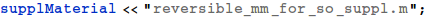

Derivation of the Rate Law for the the Reversible Michaelis-Menten Mechanism
http://biology.stackexchange.com/a/43832/1136
Created with Wolfram Mathematica
1. Preliminaries


2. Mechanisms

3. Derivation of the rate-constant form of the Rate Law
Differential equation (making the steady-state assumption, and where eo is the total enzyme concentration).

Velocity equation


4. Define Kinetic Constants

5. The Kinetic-Constant form of the Rate Law
6. An Important Check